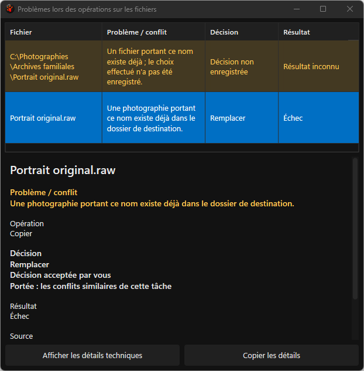
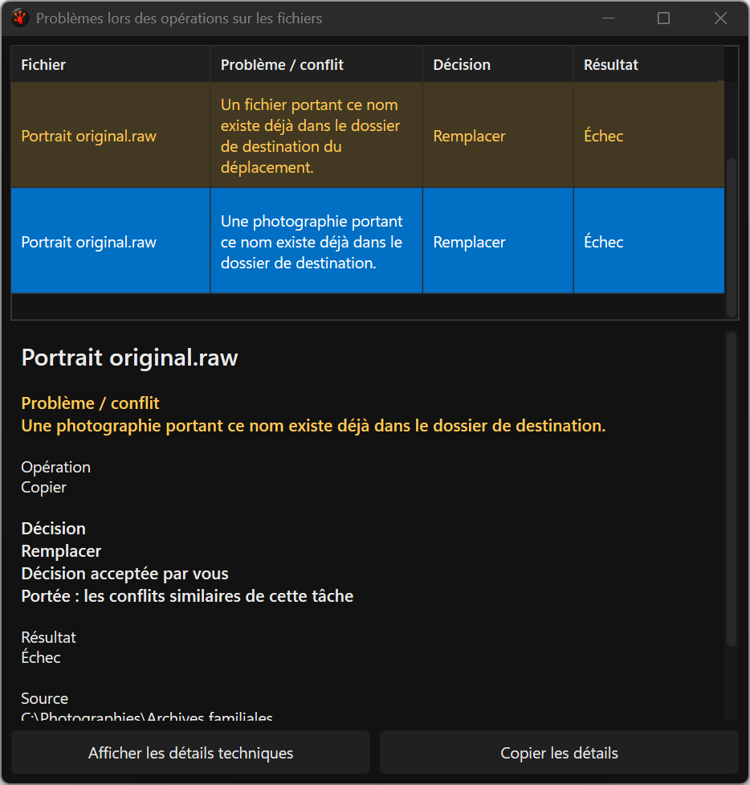
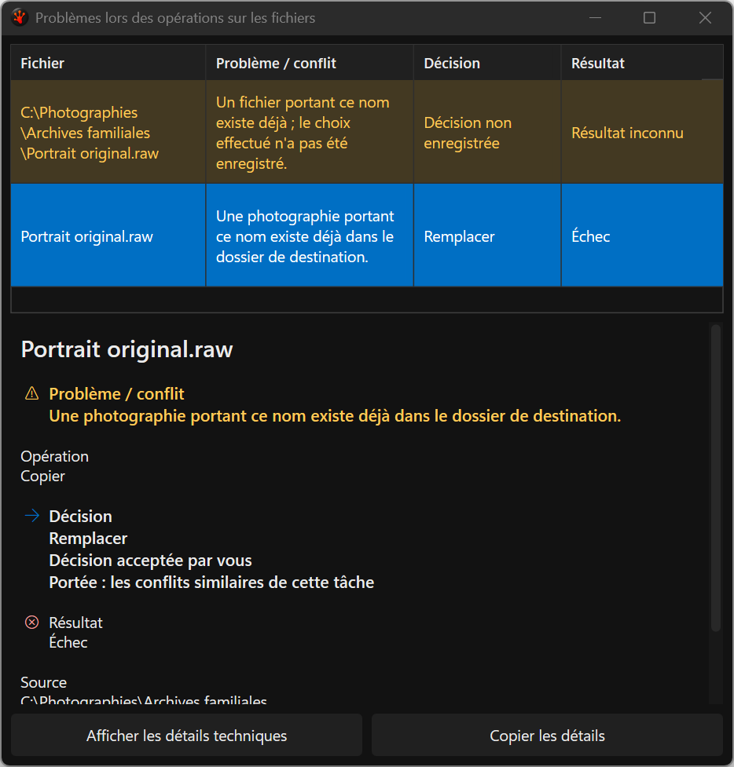
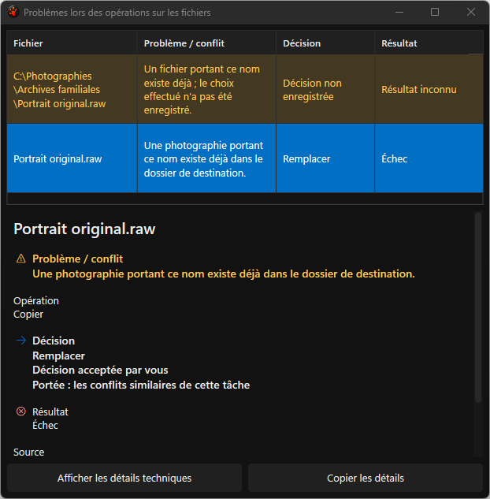
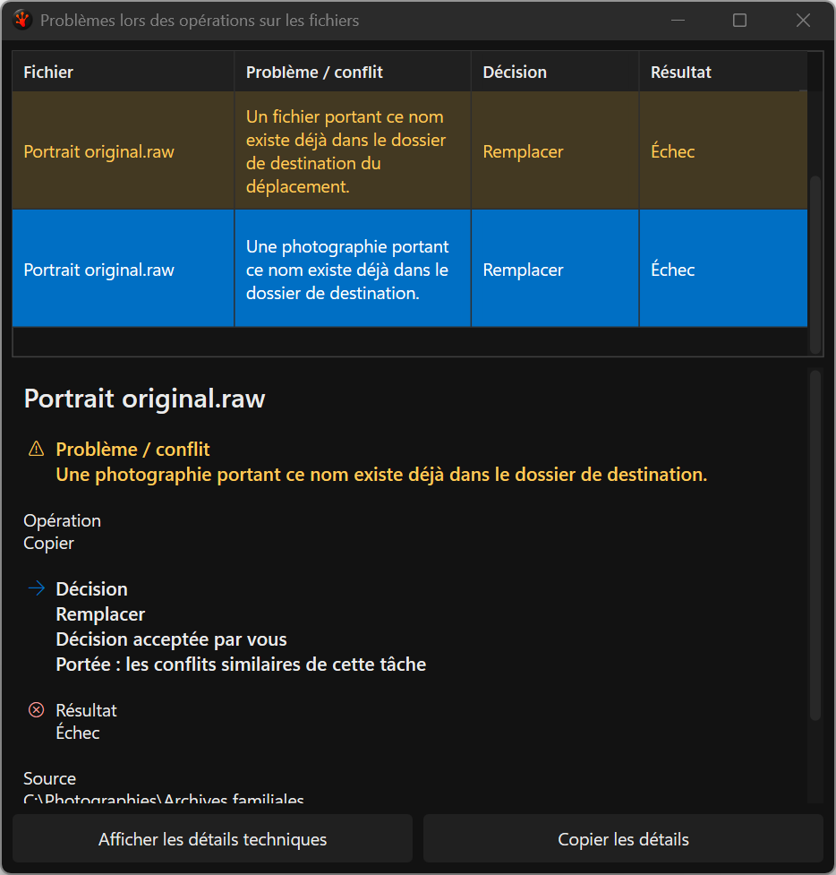
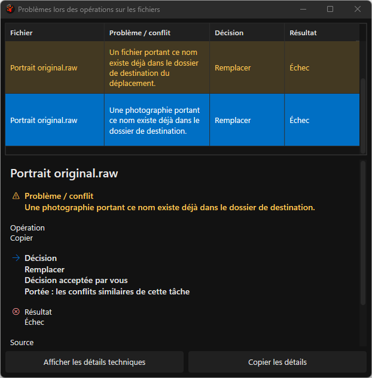
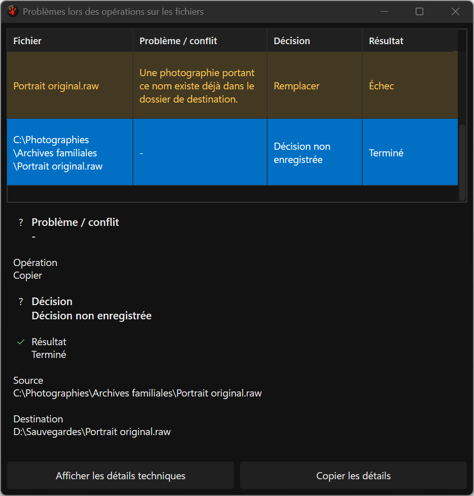
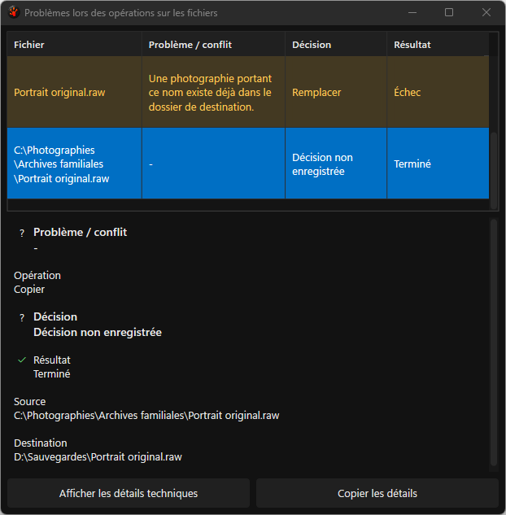
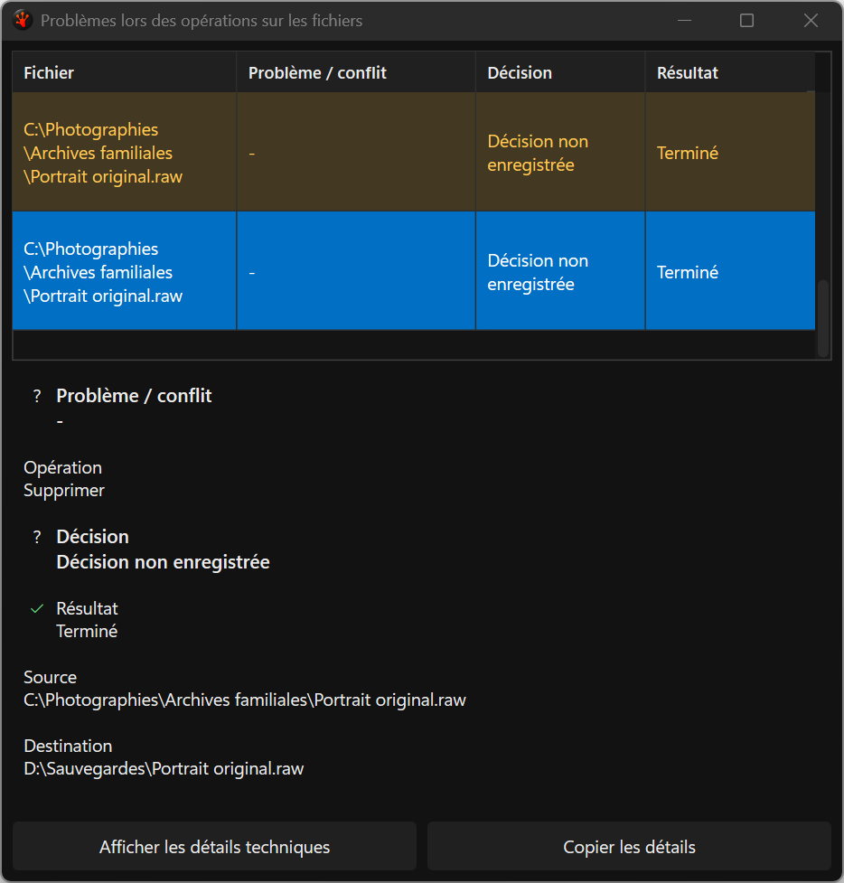
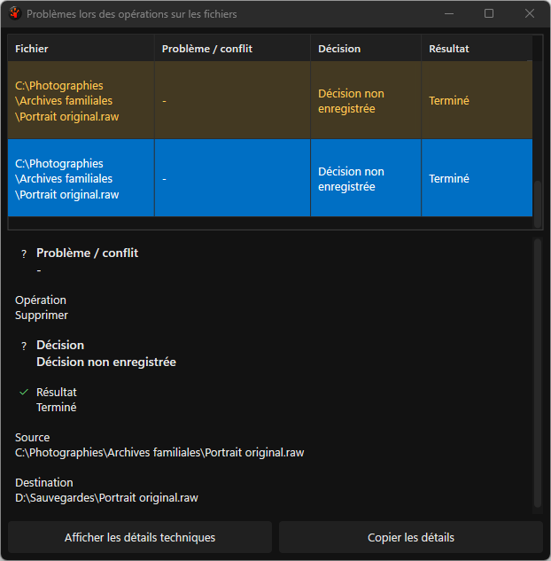

Actual semantic Issues detail captures
Fourteen focused originals; all common pairs are indexed in JSON.
Evidence and limits
baseline: 125-issues-failed-replacement__dark__fr-FR__display1__144dpi.png

baseline: 125-issues-failed-replacement__dark__fr-FR__display2__96dpi.png

baseline: 129-issues-reappeared-identity__dark__fr-FR__display1__144dpi.png

baseline: 129-issues-reappeared-identity__dark__fr-FR__display2__96dpi.png

candidate-v6: 125-issues-failed-replacement__dark__fr-FR__display1__144dpi.png

candidate-v6: 125-issues-failed-replacement__dark__fr-FR__display2__96dpi.png

candidate-v6: 129-issues-reappeared-identity__dark__fr-FR__display1__144dpi.png

candidate-v6: 129-issues-reappeared-identity__dark__fr-FR__display2__96dpi.png

candidate-v6: 129b-issues-confirmed-publication__dark__fr-FR__display1__144dpi.png

candidate-v6: 129b-issues-confirmed-publication__dark__fr-FR__display2__96dpi.png

candidate-v6: 129c-issues-confirmed-delete__dark__fr-FR__display1__144dpi.png

candidate-v6: 129c-issues-confirmed-delete__dark__fr-FR__display2__96dpi.png

candidate-v6: 129d-issues-confirmed-rename__dark__fr-FR__display1__144dpi.png
candidate-v6: 129d-issues-confirmed-rename__dark__fr-FR__display2__96dpi.png